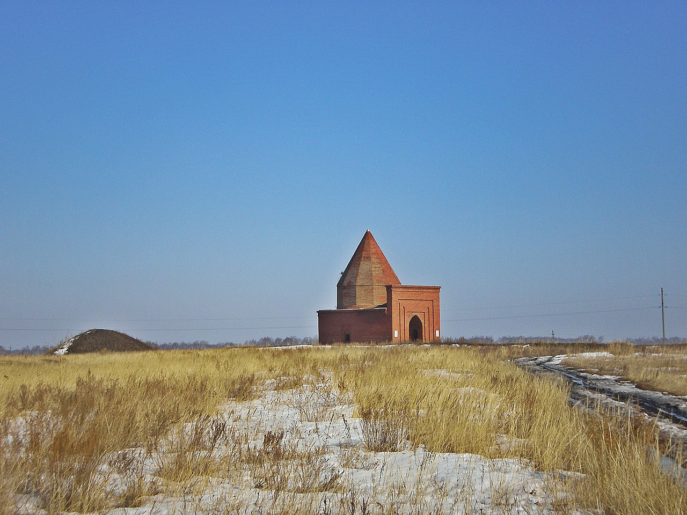

Мавзолей Кесене
Мавзолей Кесене, в просторечии башня Тамерлана, — исторический
памятник, датируемый XIV—XVI веками и расположенный в Варненском
районе Челябинской области.
-
Он расположен в 3 километрах к востоку от села Варна на берегу
заросшего озера Большое Кесене. «Кесене» в переводе с казахского
обозначает «мавзолей».
-
В конце советского периода вокруг башни обнаружили 700 могил. Ученые
утверждают, что это — древний некрополь эпохи раннего железного
века, а «башня Тамерлана» построена гораздо позже.
-
Возможно, красивые легенды к Тамерлану никакого отношения не имеют,
но строение в степи действительно является памятником мусульманской
мемориальной архитектуры XIV—XVI веков, установленным над женским
захоронением.
